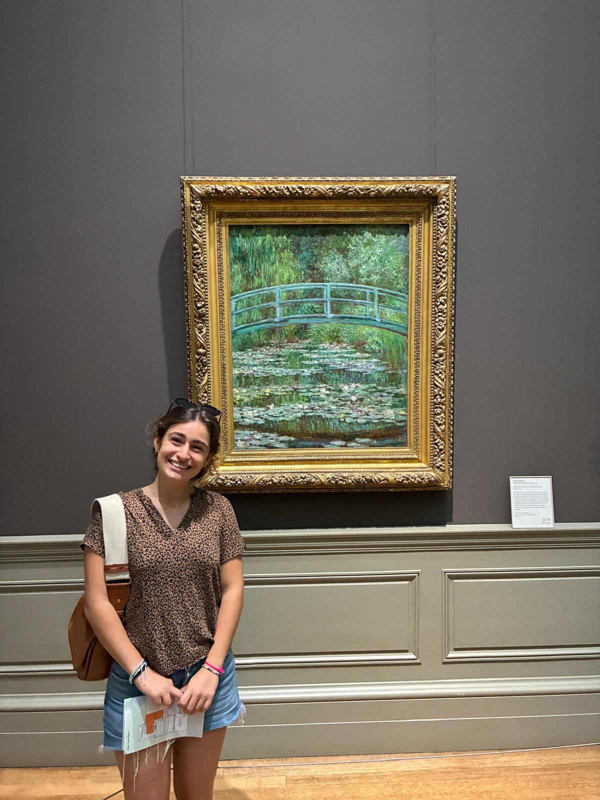

Bienvenue sur M-Art
Je suis étudiante et passionnée d'art. À travers M-Art, j'ai voulu créer un espace personnel consacré aux oeuvres qui me touchent, me questionnent et, selon moi, ont laissé une empreinte durable dans l'histoire de l'art.
Ce portfolio rassemble des oeuvres que j'aime pour leur force visuelle, leur sens, mais aussi pour l'impact culturel qu'elles ont pu avoir à leur époque et au-delà. Mon regard s'oriente particulièrement vers les artistes femmes, qui ont su s'imposer dans un monde de l'art longtemps dominé par les hommes, souvent avec talent, audace et singularité.
Avec M-Art, je souhaite partager une sélection d'oeuvres accompagnées de commentaires personnels, afin de proposer une approche sensible, accessible et engagée de l'art.
Voir les oeuvres